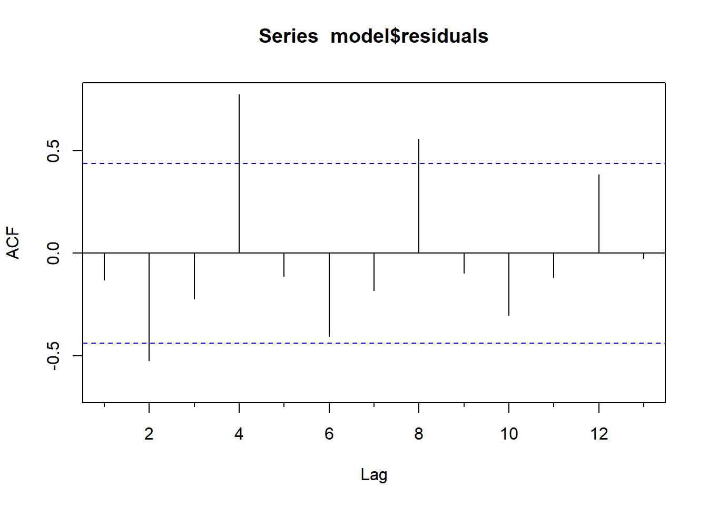
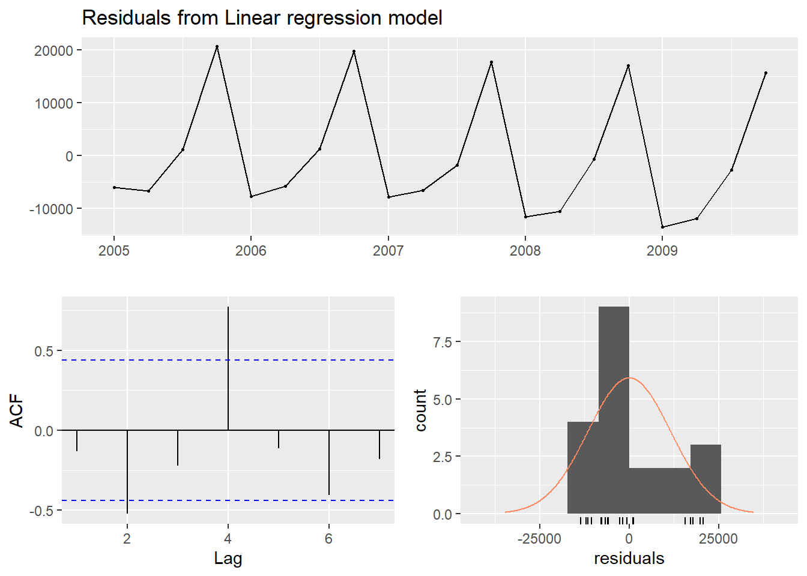
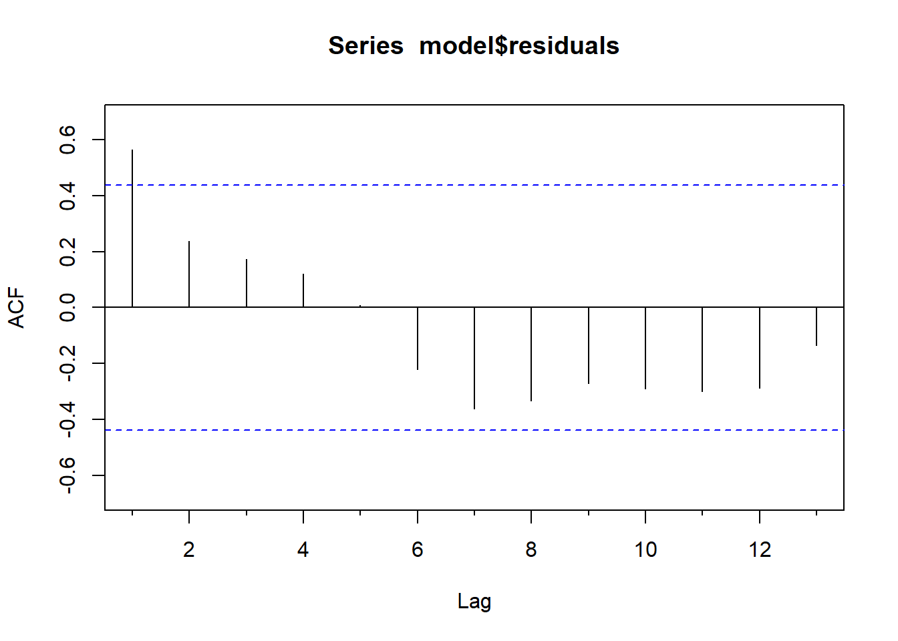
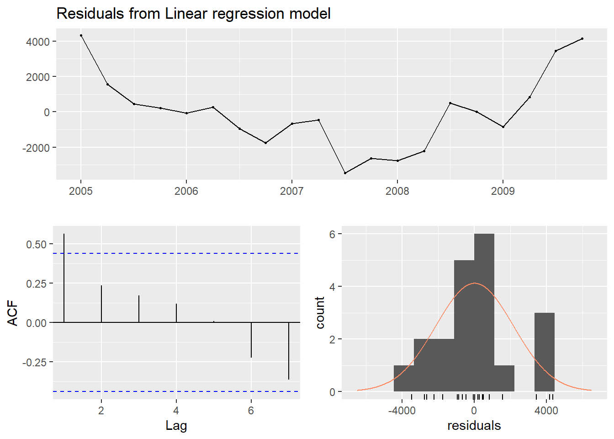
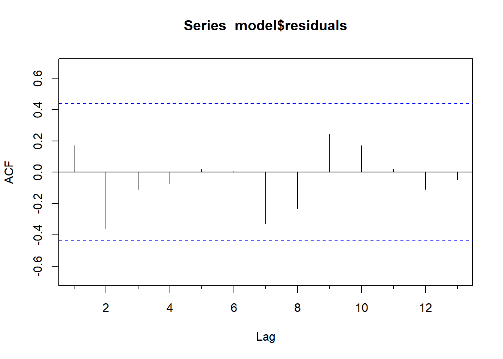
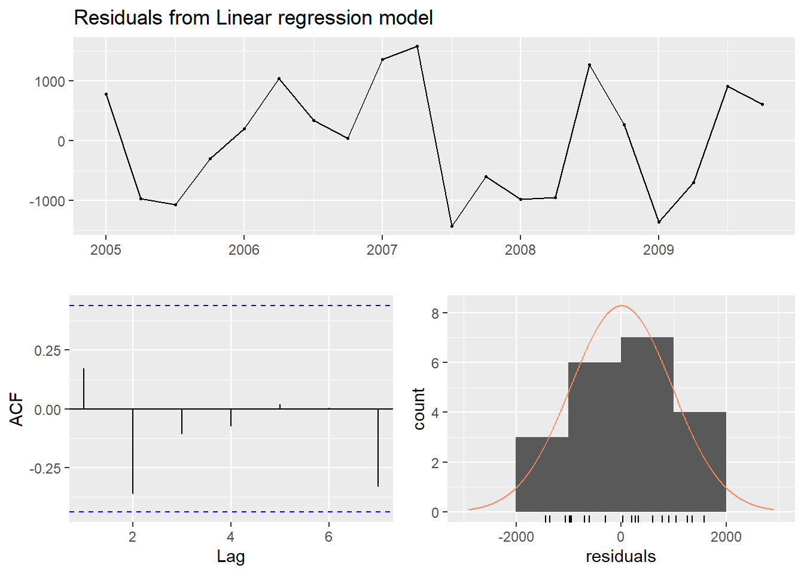

Exploração dos Modelos
Outubro de 2019
1 Criando os datasets de séries temporais
1.1 Carregando a base de dados processada
target_data <- readRDS('../data/processed/target_dataset.rds')
target_ts <- ts(target_data$Sales,
start = c(2005,1),
end = c(2010, 4),
frequency = 4)
summary(target_ts)## Min. 1st Qu. Median Mean 3rd Qu. Max.
## 48617 52681 59440 64757 76835 1033371.2 Criando o conjunto de dados de treino e teste
# creating train and test sets ------------------------------------------------
GenerateTrainTestDatasets(target_ts,
c(2005, 1),
c(2009, 4),
c(2010, 1),
c(2010, 4))
train_ts <- readRDS('../data/processed/train_ts.rds')
test_ts <- readRDS('../data/processed/test_ts.rds')
# plot of the training and testing temporal series
plot(train_ts,
xlab = "Tempo",
ylab = "Vendas",
xaxt = "n",
ylim = c(48000, 104000),
xlim = c(2005, 2011),
bty = "l")
axis(1, at = seq(2005, 2011, 1), labels = format(seq(2005, 2011, 1)))
lines(test_ts, bty = "l", col = "red")
box(lty = '1373', col = 'black')
2 Rodando os modelos lineares de séries temporais
Chamando a função de geração dos modelos lineares


##
## Ljung-Box test
##
## data: Residuals from Linear regression model
## Q* = 23.539, df = 3, p-value = 3.117e-05
##
## Model df: 2. Total lags used: 5
##
## Ljung-Box test
##
## data: Residuals from Linear regression model
## Q* = 30.316, df = 3, p-value = 1.184e-06
##
## Model df: 3. Total lags used: 6
##
## Ljung-Box test
##
## data: Residuals from Linear regression model
## Q* = 19.904, df = 3, p-value = 0.0001777
##
## Model df: 5. Total lags used: 8
##
## Ljung-Box test
##
## data: Residuals from Linear regression model
## Q* = 12.353, df = 3, p-value = 0.006266
##
## Model df: 6. Total lags used: 9| model | mape |
|---|---|
| model_trend | 15.860488 |
| model_trend_square | 20.114478 |
| model_trend_season | 6.360705 |
| model_trend_square_season | 4.376970 |
3 Considerações finais
To-do.